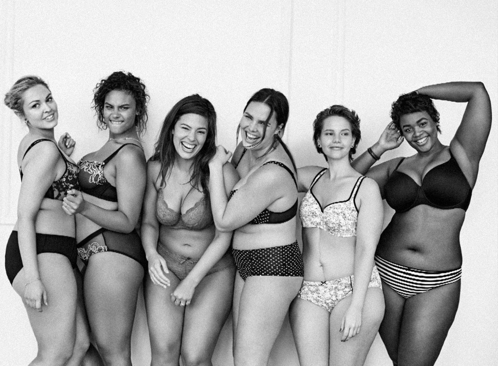

Plus Is Equal
Now is the time to celebrate women. It is time to make every women feel beautiful, in all their shapes and forms.
The 2015 September Vogue issue, included and anonymous advertisement that featured the silhouettes of plus size models with a tagline “it’s time for change”. Years later the brand lane Bryant revealed they were the ones behind it.
It shouldn't be shocking to “see a more accurate reflection of society in campaigns” since the “average American is a size 16”, “65% of women size 14 to 25” feel that the retail industry ignores their needs.
Furthermore, Rihanna’s Fenty Beauty also included curvy models and a verity of women of color which reflects equality and acceptance. Milk Makeup is another example of brand that proved to stand for diversity. According to Georgie Greville, the creative director of the brand representing self expression is crucial for them. “Influencers and the transparency of the Internet has really brought awareness to the fact that plus-curvy women have been left out of the conversation for too long. I am glad brands are taking initiative to make changes in the industry. We must all be more representative of how diverse the world truly is.”.
It shouldn't be shocking to “see a more accurate reflection of society in campaigns” since the “average American is a size 16”, “65% of women size 14 to 25” feel that the retail industry ignores their needs.
92%5 of plus size women feel that
their not equally represented in the media.
The brand also released a site “plusisequal” to stand with women that feel segregated in todays society.
However in the recent years society has become more open towards social stereotypes.
Many brands such as Glossier or L’Oreal, acknowledged the issue and featured plus size models in their campaigns.
their not equally represented in the media.
Furthermore, Rihanna’s Fenty Beauty also included curvy models and a verity of women of color which reflects equality and acceptance. Milk Makeup is another example of brand that proved to stand for diversity. According to Georgie Greville, the creative director of the brand representing self expression is crucial for them. “Influencers and the transparency of the Internet has really brought awareness to the fact that plus-curvy women have been left out of the conversation for too long. I am glad brands are taking initiative to make changes in the industry. We must all be more representative of how diverse the world truly is.”.
